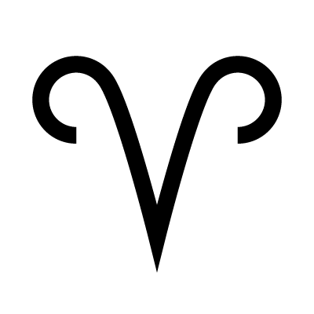
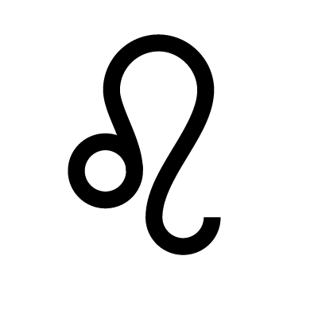
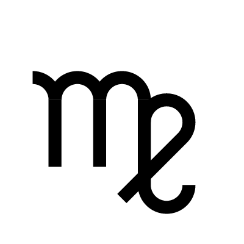
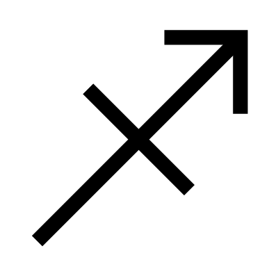
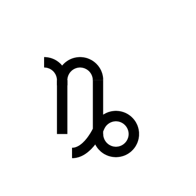
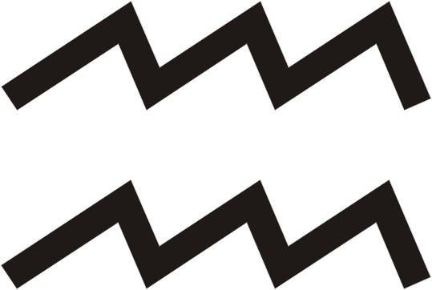
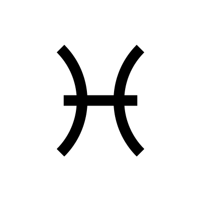

Rules identity, personality, physical appearance, and first impressions. It represents how you present yourself to the world.
Rules money, possessions, material security, and self-worth. It reflects what you value most in life.
Rules communication, learning, siblings, and short trips. It represents how you think and express yourself.
Rules home life, family, ancestry, and emotional foundations. It reflects your roots and private world.

Rules creativity, romance, fun, and self-expression. It represents passion, joy, and personal talents.

Rules daily routines, service, responsibilities, and wellness. It reflects work habits and health patterns.
Rules relationships, marriage, contracts, and one-on-one partnerships. It represents commitment and balance.
Rules shared finances, intimacy, transformation, and rebirth. It represents deep emotional bonds and change.

Rules travel, higher education, spirituality, and belief systems. It reflects exploration and personal growth.

Rules career, public image, reputation, and long-term goals. It represents ambition and achievements.

Rules friendships, social groups, networking, and future aspirations. It represents collective goals and dreams.

Rules intuition, spirituality, hidden matters, and the subconscious mind. It represents healing and inner reflection.